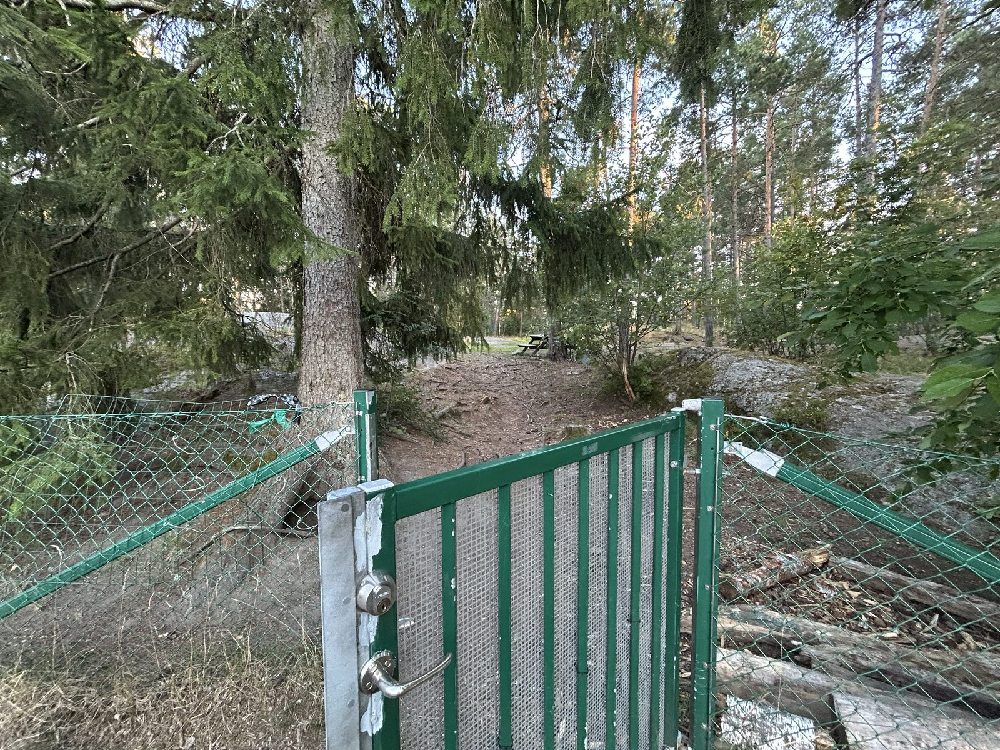
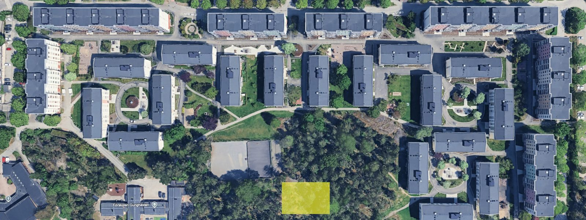
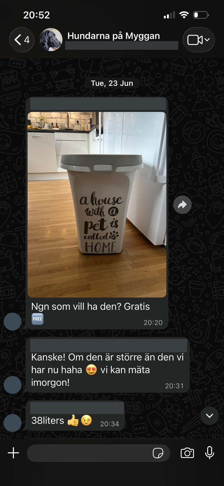

Kopplingstvång
För hundar gäller den kommunala regeln om kopplingstvång. Den gäller i hela Sjötungans område – även lokalgatan.
Hundar hör hemma i Sjötungan. Två regler gäller i hela området, och de är enkla: hunden ska vara kopplad, och du plockar upp efter den.
För hundar gäller den kommunala regeln om kopplingstvång. Den gäller i hela Sjötungans område – även lokalgatan.
Avföring ska tas upp. Det gäller överallt i området, och även inne i hundrastgården.
För Sjötungans hundar finns en inhägnad hundrastgård med grind, intill idrottsplatsen. PLOCK-UPP gäller även där. Visa på karta.
Katter får inte gå lösa i Sjötungan, eftersom de ofta utför sina behov i sandlådorna på lekplatserna. För andra typer av djur kontaktar du Tyresö kommun.
Rastgården är ett stycke skogsmark inhägnat med grönt nätstängsel, med en grind in. Innanför är det tallar och granar, barrmark och berg i dagen – ingen anlagd gräsmatta. Klicka på bilden för att se den i full storlek.

Hundrastgården markerad i gult på en satellitbild över området. Den ligger söder om husraderna, i skogspartiet intill idrottsplatsen och en bit nordost om Förskolan Gunghästen. Observera att norr inte är rakt uppåt i bilden utan snett upp åt vänster.

Kartbilden är ett utsnitt ur Google Maps satellitvy och är Googles material, inte föreningens.
Föreningens rastgård är inte den enda inom räckhåll – kommunen har en till på gångavstånd.
Kommunens hundrastgård vid Wättinge gårdsväg, intill Dalhallen, ungefär en kvarts promenad bort – ett alternativ till föreningens egen när man ändå är ute och går. Visa på karta. Reglerna för kommunens rastgårdar står på Hund i Tyresö.
Hundägarna i föreningen håller kontakt i en egen WhatsApp-grupp, ”Hundarna på Myggan”. Där diskuteras allt som rör hundarna och vardagen med dem i området – från praktiska frågor till saker man vill skicka vidare till en granne. Gruppen är medlemmarnas egen och drivs inte av styrelsen. Vill du vara med, fråga en granne med hund – vid rastgården träffar du oftast någon.

Sjötungan är ett stort område med 604 lägenheter, lekplatser, fotbollsplan och gårdar som är många hushålls enda uteplats. Gårdarna delas av barn som leker i sandlådorna, grannar som odlar och boende som är hundrädda eller allergiska. Kopplet och påsen är det som gör att alla kan använda samma ytor.
Något som inte fungerar? Prata i första hand med grannen. Kvarstår problemet hör du av dig till styrelsen på info@sjotungan.se. Frågor om djurhållning i övrigt hanteras av Tyresö kommun.
Ordningsreglerna i sin helhet finns under Stadgar och ordningsregler, och uppslagsverket Sjötungan A–Ö samlar det mesta om hur området fungerar.
{kind=link}
{kind=link}
{kind=link}